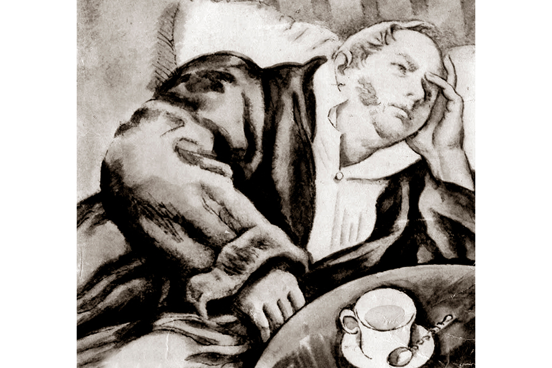

| Об Обломове и Штольце | ||||
|  | Критерий | Обломов | Штольц | |
| Социальное положение | Барин | Представитель нового класса буржуазии | ||
| Отличительные черты | Паралич воли и беспробудная лень | Непреклонная воляи огромный запас деятельности и энергии | ||
| Чем живёт | Воображением | Практическим делом, опытом, фактами | ||
| Штольц - друг Обломова с детства. Штольц делает все, чтобы пробудить Обломова к жизни и деятельности. Попытки эти ни к чему не привели, и жизненные пути двух героев расходятся. Штольц является как бы фоном, на котором лучше видны те положительные качества характера Обломова, которые Штольц и Ольга называют "хрустаной", чистой душой. | ||||